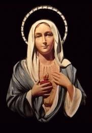
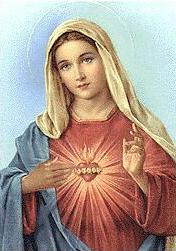
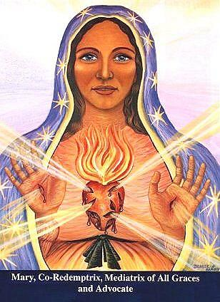
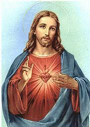
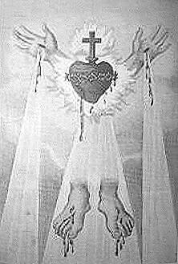
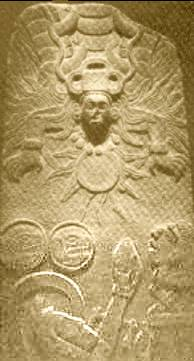
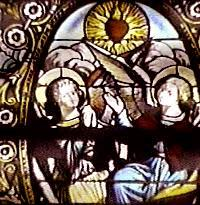
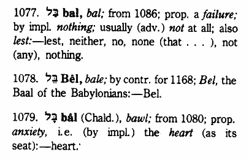
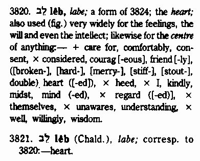
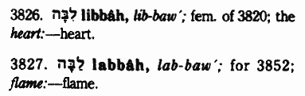

|  | Many of the Catholic statues and illustrations of Mary and Jesus will
depict an exposed heart, and if you look closely, many times you will see
that there is a surrounding sun burst and a flame on top of the heart. An
example of this can be seen at left, which by Catholic teaching, portrays
the immaculate heart of the Blessed Virgin Mary, to which Catholics are to
consecrate themselves.
Consecration is defined by the Catholic Encyclopedia as "the act and ceremony by which a person or thing is dedicated to sacred service or set apart for sacred use." So for a Catholic to consecrate themselves to the Immaculate Heart of Mary is to dedicate their life in service to Mary. |
| From the book "Miraculous Images of Our Lady", by Joan Carroll Cruz -Copyright © 1993, TAN Books and Publishers, INC., Rockford, Illinois 61105. |
Here are examples of this Catholic teaching, beginning with consecration to Mary:
Give all to Jesus through Mary
When a person is truly consecrated to Mary, he lives that consecration each day by giving himself and all that he has to the Mother of God. This includes his natural property and possessions as well as his supernatural merits and graces. EVERYTHING is presented to Mary to use as she wills.
|  | Indeed, this total offering often frightens many people, but it
should not. Those who cannot entrust their lives and possessions to Mary
do not really know her very well. The Mother of God is all love, mercy
and goodness. Basically, this is the message of her Immaculate Heart.
No Christian who understands his faith would be fearful about giving everything to Jesus, for the God-Man is completely worthy and deserving of trust. But the Sacred Heart of Jesus and the Immaculate Heart of Mary beat as one. That is to say, Mary's will is always the same as her Divine Son's. Since God wants devotion to the Immaculate Heart of Mary established in the world, those who consecrate themselves to the Mother of God do the will of her Son. They go to Jesus in union with Mary. |
Source: Catholic Truth for Youth, by Father Robert J. Fox, copyright 1978, published by Ave Maria Institute, Washington, N.J. 07882, page 431.
| In this remarkable image of the Immaculate Heart of Mary, from the now closed Magnificat Meal Movement International web site (based in Australia), note that Mary is depicted as bearing the nail wounds in her palms as if she were the one crucified on the cross! This is both blasphemous and Antichrist! |
 |
This consecration in service to Mary is quite contrary to scripture and the teachings of Jesus-
Mat 4:10 Then saith Jesus unto him, Get thee hence, Satan: for it is written, Thou shalt worship the Lord thy God, and him only shalt thou serve.
Luke 4:8 And Jesus answered and said unto him, Get thee behind me, Satan: for it is written, Thou shalt worship the Lord thy God, and him only shalt thou serve.
And now the Catholic teaching on the Sacred Heart of Jesus:
Sacred Heart of Jesus
1. The Sacred Heart of Jesus is a devotion to Jesus Christ, consisting of worship of Him through His heart as representing His love shown in the Incarnation. His passion and death, the institution of the Eucharist. The devotion is centered on reparation to Christ for man's ingratitude, manifested particularly by indifference to the Holy Eucharist. The worship is not directed to the Heart alone, but to the Person of Jesus Christ. The Church forbids public cult of the Heart separated from the rest of the body, but allows private veneration, as is the case of Sacred Heart badges.
|  | 2. A feast, requested by our Lord Himself, commemorates the
unrequited love of the Sacred Heart in the Eucharist and is celebrated
on the Friday after the feast of Corpus Christi.
3. Enthronement of the Sacred Heart in the home is acknowledgment of the sovereignty of Christ over the family. It is expressed through solemn installation of the head of the house of a representation of the Sacred Heart in a place of honor, together with an act of consecration, in the presence of the entire family. Another indulgenced practice for individuals or families is to spend an hour in reparation before the Blessed Sacrament or before an image of the Sacred Heart in the home between the hours of 9 P.M. and 6 A.M. |
Source: The Catholic Encyclopedia, revised and updated, edited by Robert Broderick, copyright 1987, published by Thomas Nelson Publishers, page 535.
| At right is an illustration of the flaming sacred heart of Jesus from a 19th century Catholic book, Catholic Oratory: a Compilation of Sacred and Sublime Orations, published by T. F. Connealy, New York, in 1891, with the approbation of the Archbishop of New York, Michael Augustine, that was titled "The Five Wounds" (of Christ). |
 |
According to Catholic teaching-
It was to St. Margaret Mary Alacoque, a humble nun of the Order of the Visitation of Our Lady that Our Lord chose to reveal to the world His Sacred Heart, thus opening a New Era of Grace and Mercy in the history of the Church and the world. These private revelations took place during the years 1673-1675, and are drawn from the diary of St. Margaret Mary Alacoque, the witness of her fellow sisters, and that of her spiritual director, St. Claude de La Colombiere.
Notice how St. Margaret Mary Alacoque describes the revelation of the "Sacred Heart" of Jesus (emphasis is mine):
Our Lord makes known the Devotion of the First Fridays: June 1674
On the First Friday of each month, the above-mentioned grace connected with the pain in my side was renewed in the following manner: the Sacred Heart was represented to me as a resplendent sun, the burning rays of which fell vertically upon my heart, which was inflamed with a fire so fervid that it seemed as if it would reduce me to ashes. It was at these times especially that my Divine Master taught me what He required of me and disclosed to me the secrets of His loving Heart. On one occasion, while the Blessed Sacrament was exposed, feeling wholly withdrawn within myself by an extraordinary recollection of all my senses and powers, Jesus Christ, my sweet Master, presented Himself to me, all resplendent with glory, His Five Wounds shining like so many suns. Flames issued from every part of His Sacred Humanity, especially from His Adorable Breast, which resembled an open furnace and disclosed to me His most loving and most amiable Heart, which was the living source of these flames. It was then that He made known to me the ineffable marvels of His pure love and showed me to what an excess He had loved men, from whom He received only ingratitude and contempt.
Source: The Revelation of the Sacred Heart of Jesus, online at
 The Mantle,
the Apostolate Alliance of the Two Hearts.
The Mantle,
the Apostolate Alliance of the Two Hearts.
So the Catholic Church encourages people to "enthrone" an image of the flaming heart of Jesus in their home and venerate or worship it. As shown above, the first Friday of every month and indeed the whole month of June are set aside for the veneration of the flaming Sacred Heart of Jesus.
Exo 20:4 Thou shalt not make unto thee any graven image, or any likeness of any thing that is in heaven above, or that is in the earth beneath, or that is in the water under the earth:
Exo 20:5 Thou shalt not bow down thyself to them, nor serve them: for I the LORD thy God am a jealous God, visiting the iniquity of the fathers upon the children unto the third and fourth generation of them that hate me;
The above commandment of God makes no exception for images of hearts. Bowing down to, or venerating any image what-so-ever is clearly prohibited, yet the Roman Catholic church teaches its people to do exactly that.
From the 1913 edition of the Catholic Encyclopedia, at the New Advent Supersite:
 Devotion to the
Immaculate Heart of Mary
Devotion to the
Immaculate Heart of Mary
 Devotion to the Sacred
Heart of Jesus
Devotion to the Sacred
Heart of Jesus
Also visit the Apostolate Alliance of the Two Hearts-
 The Mantle.
The Mantle.
 Marians of the Immaculate
Conception.
Marians of the Immaculate
Conception.
And here are no less than four papal encyclicals that are dedicated to the cult of the Sacred Heart:
 Annum Sacrum
by Leo XIII in 1899.
Annum Sacrum
by Leo XIII in 1899.
 Caritate Christis
Compulsi by Pius XI in 1932.
Caritate Christis
Compulsi by Pius XI in 1932.
 Miserrentissimus
Redemtor by Pius XI in 1928.
Miserrentissimus
Redemtor by Pius XI in 1928.
 Haurietis Aquas
by Pius XII in 1956.
Haurietis Aquas
by Pius XII in 1956.
It is worth noting the following from Haurietis Aquas:
23. It is of course beyond doubt that the Sacred Books never make express mention of a special worship of veneration and love made to the physical Heart of the Incarnate Word as the symbol of His burning love.
So, Pius XII readily admits that veneration of the Sacred Heart is unbiblical. This prompts the question, just where does this type of worship really originate?
|  |  |
|
From the video "666 and the Mark" by
James Arrabito, |
|
Human sacrifice, particularly by offering a victim's heart to the sun god, was commonly practiced ...
Source: Encyclopedia Britannia online, Aztec.
As illustrated above on the left by the stone carving from Cozumel, the pagan Aztecs / Mayans of Mexico would cut the heart out of a living victim and offer it as a sacrifice to the sun god, in this case, Kukulcan / Quetzalcoatl, also known as the feathered serpent. And in the very similar stained-glass window on the right, note that the Sacred Heart is portrayed as aflame in the sky like the sun, being adored by two angels!
The word for heart is identical* to the word for Baal - (bl) in
Hebrew and Chaldee.
From Strong's Hebrew Dictionary:

H1078, bel - Hebrew word for Baal, is found in Isa 46:1, Jer 50:2, 51:44.
H1079, bal - Chaldee word for heart, is found in Dan 6:14.
(* The only difference as listed is the vowel marking, but vowel marks are an invention of the Masorete Scribes of the Tenth Century)
H3820, leb - Hebrew word for heart, occurs hundreds of times in the Old Testament and is the word for Baal spelled backwards!
H3821, leb - Chaldee word for heart, is found in Dan 7:28.
H3826, libbah, Hebrew word for heart, occurs in eight verses.
H3827, labbah, Hebrew word for flame, is found in Exodus 3:2.